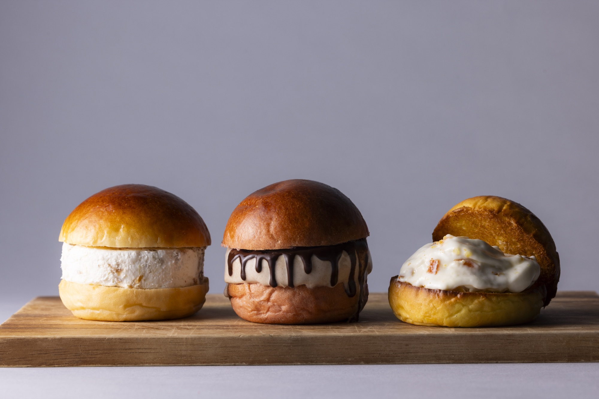
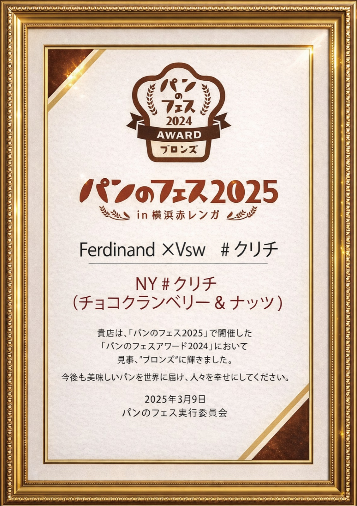
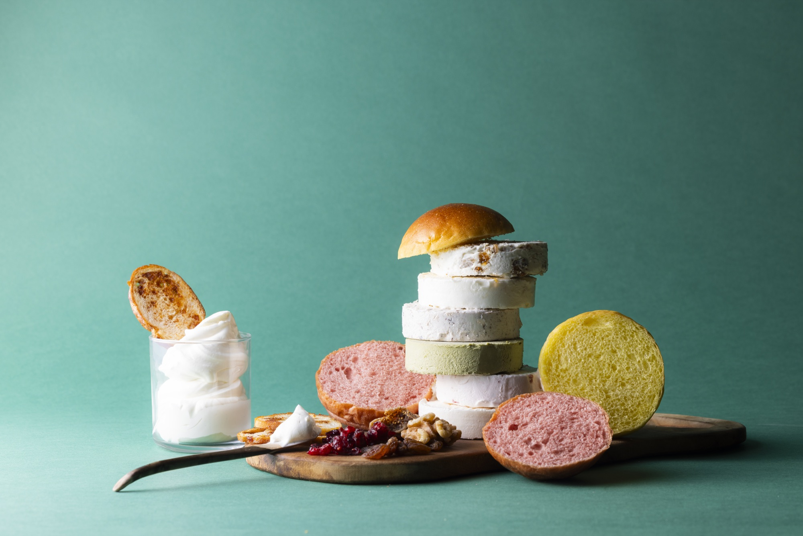
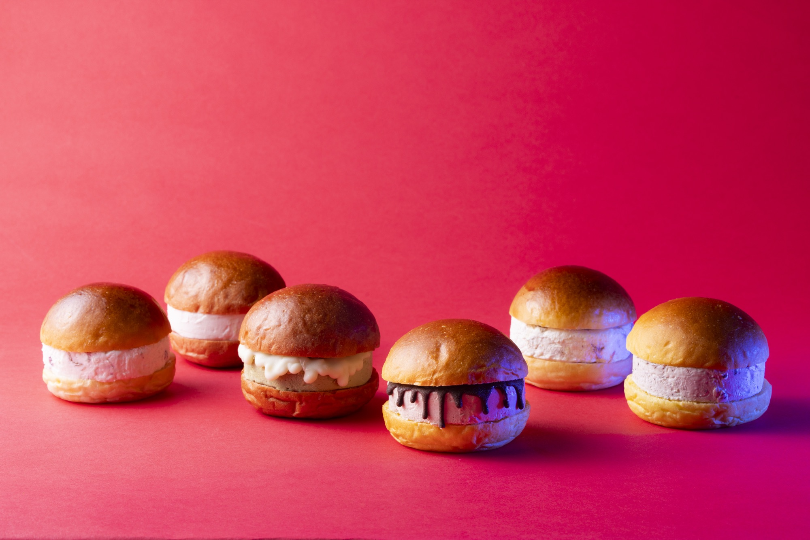

『パンのフェスアワード2025』にて「#クリチ」がシルバー賞を受賞 ― 前年ブロンズから2年連続入賞

Vsw株式会社（本社：大阪／オフィス：横浜）は、2026年3月6日（金）〜8日（日）に横浜赤レンガ倉庫イベント広場で開催された『パンのフェス2026 in 横浜赤レンガ』にて発表された「パンのフェスアワード2025」のシルバー賞を、Ferdinand &Vsw ブランドの新作クリームチーズバーガー「NY#クリチ（プラリネ絡むビターなレモン）」で受賞したことをお知らせいたします。
「パンのフェスアワード」は 2021 年にスタートした“パン好きのパン好きによるパン好きのための”アワードで、今回で6 回目。2025 年 1 月〜12 月に新発売されたパンを対象に、事前訪問した顧客と当日の来場者の投票で決定される権威ある賞です。Ferdinand &Vsw は 前年「パンのフェスアワード2024」でブロンズ賞を受賞しており、今回のシルバー賞で2年連続入賞・1ランクアップとなります。
受賞概要
| アワード | パンのフェスアワード2025（第6回） |
|---|---|
| 部門 | シルバー賞（3店舗選出のうち1店舗） |
| 受賞作品 | NY#クリチ（プラリネ絡むビターなレモン） ― ほろ苦いレモンピールが香る濃厚クリームチーズ × プラリネ × ふわふわピンクバンズ |
| 出品ブランド | #クリチ食べた？ Ferdinand &Vsw |
| 開催日程 | 2026年3月6日（金）〜 8日（日） |
| 会場 | 横浜赤レンガ倉庫イベント広場 |
| 主催 | パンのフェス実行委員会 |
| 選考方法 | 2025年1〜12月発売の新作パンを対象／事前訪問顧客・来場者による投票＋審査 |
審査員・来場者投票での評価ポイント
受賞作「NY#クリチ（プラリネ絡むビターなレモン）」は、ニューヨーク由来の“チーズ × フルーツ × ナッツ”の感覚をクリームチーズバーガーに落とし込んだ1点。ほろ苦いレモンピールが香る濃厚クリームチーズと、キャラメリゼしたナッツのプラリネを、ふわふわの淡いピンクバンズで挟み込むスタイルで、ひと口に“香り・苦味・甘み・食感”が重なる体験を追求しました。
「クリチ」はクリームチーズの愛称。パンでも、スイーツでも、バーガーでもない、“新しい食べ方”としてのクリームチーズバーガーを、パン業界の最前線である『パンのフェス』で評価いただけたことは大きな励みです。投票・応援くださった皆さま、本当にありがとうございました。
2年連続入賞 ― ブロンズからシルバーへ
前年「パンのフェスアワード2024」では、Ferdinand ×Vsw #クリチ の「NY#クリチ（チョコクランベリー&ナッツ）」でブロンズ賞を受賞。2年連続でのアワード入賞、1ランクアップでの再受賞となりました。

（2025.03.09 パンのフェス実行委員会）
会場での #クリチ ラインナップ
『パンのフェス2026 in 横浜赤レンガ』では、受賞作を含む #クリチ の新作3種ラインナップを出品しました。


3日間の会期中、#クリチ のブースは連日行列となり、開発した新作シリーズは完売いたしました。お買い求めいただけなかった皆さまには心よりお詫び申し上げるとともに、催事・店舗・オンラインでの継続提供に向けて準備を進めております。
同時発表の受賞結果（一部）
- グランプリ：ベーカリー ペニーレイン「ロックンロール」（栃木・那須）
- ゴールド：パン工房ぐるぐる「完熟いちごと奥久慈卵のとろ〜りクリームパン」（茨城）／ Lycka「生スコーン」（愛知）
- シルバー：パン香房ベル・フルール／ Komorebi Table（エピナール那須）／ #クリチ食べた？ Ferdinand &Vsw
全受賞結果・各作品は パンのフェス公式サイト「AWARD 2025」ページ をご覧ください。
今後の展開
- 受賞記念ラインナップの オンラインショップ での限定販売
- 関西エリアへの出店（神戸「てくてくパンまつり」ほか）
- 全国各地のパンフェス・百貨店催事への継続出店
- メタバース空間「KURICHI LAND」でのシルバー受賞記念イベント
最新情報は、公式Instagram @kurichi.jp ／ @vsw_creamcheese および オンラインショップ でご確認いただけます。
会社概要
- 会社名：Vsw株式会社
- ブランド：#クリチ食べた？ Ferdinand &Vsw（クリームチーズバーガー）
- ポジショニング：NY発・大阪生まれ
- Web：vsw.co.jp
本件に関するお問い合わせ
取材・撮影・メディア掲載・法人コラボレーションに関するご相談は、お問い合わせフォーム までお寄せください。